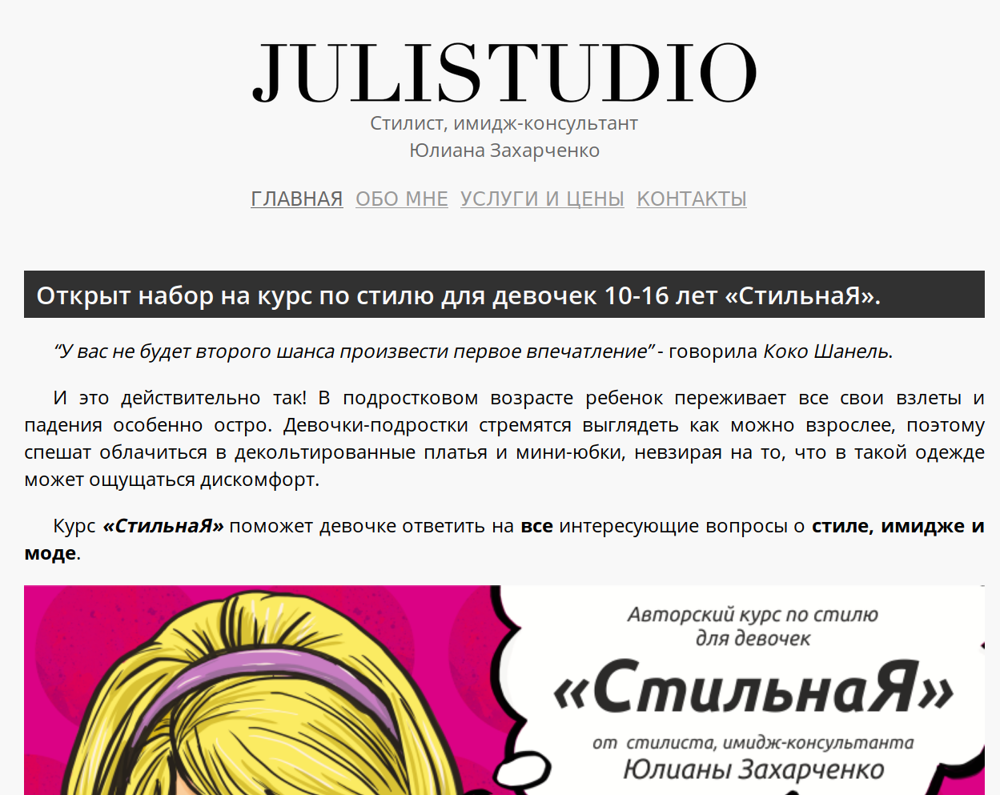

Обо мне
Привет, я Михаил, веб-разработчик и инженер в области разработки ПО из Томска.
Сейчас я работаю инженером и научным сотрудником в компании Рубиус. У меня есть 7 лет опыта веб-разработки и 3 года опыта управления проектами разного масштаба: от страниц приземления и небольших сайтов до крупных проектов уровня корпоративных геоинформационных систем промышленных предприятий.

Навыки
Я занимаюсь Full-stack веб-разработкой и проектированием программного обеспечения. Могу руководить небольшой командой разработчиков: ставить задачи, контролировать процесс выполнения, укладываться в сроки.
Frontend
-
Хорошие знания vanilla JS (ES5, ES2015, топ-30% на upwork.com).
Курсы и сертификаты:- Курсы на javascript.ru
- Microsoft HTML5 Application Development Fundamentals
- Уверенное владение Dojo (v1.6+)
- AMD и require.js, создание «толстых» клиентов, сборка и оптимизация кода
- Опыт поддержки проектов на jQuery и ExtJS
- Владею полезными инструментами NodeJS: Gulp, Babel, Eslint, Csslint, Csscomb, etc. Умею пользоваться NPM и Bower
- HTML5. Разработка с использованием современных API, таких как IndexedDB, localStorage, Geolocation, FileAPI, Audio/Video
- CSS3, топ-10% на upwork.com
- Опыт разработки мобильных HTML5-приложений
Backend
-
Node.js (топ-20% на upwork.com), опыт работы с Express, Koa, MongoDB/Mongoose и сопутствующими инструментами
Курсы и сертификаты:- Курсы по NodeJS на javascript.ru
- Microsoft HTML5 Application Development Fundamentals
- Опыт проектирования, разработки и сопровождения веб-приложений и сайтов на Node.JS
- MongoDB (MongoDB for Node.js developers at MongoDB University courses с результатом выше 95% баллов)
- Могу поддерживать код на PHP (прошел сертификацию как PHP-разработчик в центре IT-подготовки ТУСУР)
- Опыт работы с Oracle (PL/SQL) и Postgresql (PL/PGSQL)
- Опыт работы с картографическими API: Here, OpenLayers, Yandex, Google, etc
Другие навыки
-
Опыт участия и руководства проектами разного масштаба:
- веб-сайты
- страницы приземления
- HTML5-приложения
- Корпоративные информационные (геоинформационные) системы
- Опыт руководства успешно завершенными проектами по разработке корпоративных информационных систем (до 8 подчиненных одновременно).
- Большой опыт написания технической документации по ГОСТам и не только.
- Большой опыт по поддержке и развитию старинного кода без документации, доставшегося по наследству.
- Читаю, понимаю и реализую идеи из технической документации на русском и английском языках качественно и без словаря
Проекты
Некоторые из моих недавних проектов.
Seabass code editor
Лучший редактор кода для Ubuntu Touch с подсветкой синтаксиса, автозавершением, автосохранением и автоформатированием кода.

Мои задачи:
- разработка UI для телефонов, планшетов и ПК
- разработка приложения с нуля с использованием разных замечательных Open Source проектов и фреймворка Cordova
- создание кросс-платформенного приложения для Chrome OS и Ubuntu Touch
- поддержка приложения и выпуск регулярных обновлений
- обновление компонентов Cordova для Ubuntu после того, как этот проект был заброшен
Веб-ГИС WGS4
ГИС для автоматизации кампуса университета. Многопользовательская веб-ориентированная система с ролевым доступом к данным и функциональным возможностям и интеграцией с другим ПО Университета (в том числе для обработки персональных данных)

Мои задачи:
- прототипирование, управление требованиями и общение с заказчиками
- разработка UI
- руководство коллективом из 8 разработчиков
- разработка ГИС с использованием MapGuide OS и Dojo
- поддержка и техническое сопровождение продукта после внедрения
cpz-nk.ru
Сайт группы компаний «Центр противопожарной защиты»

- прототипирование сайта совместно с дизайнером
- разработка backend на Node.JS (Koa) и MongoDB
- разработка frontend на HTML5 и vanilla JS (require.js)
- техническое сопровождение, обновление сайта
julistudio.ru
Сайт персонального консультанта по стилю

- прототипирование
- разработка frontend на HTML/CSS
- техническое сопровождение и обновление сайта
Разное
Я закокнчил курсы по стресс-менеджменту (тренинговый центр Синтон, г. Москва), ораторскому искусству (тренинговый центр НЛП-Сибирь, г. Томск) и преподаванию в техническом вузе (ТУСУР). У меня есть опыт преподавания (больше 4 лет) в ТУСУРе. В разное время я преподавал такие дисциплины как: групповое проектное обучение, проектирование автоматизированных систем обработки информации и управления, архитектура предприятия, операционные системы.
За время работы в ТУСУРе разработал в соавторстве учебной курс и пособие по «Проектированию автоматизированных систем обработки информации и управления», а также подготовил около 20 научных публикаций (6 – в журналах ВАК). Эти публикации легли в основу успешно завершенных проектов по разработке ПО (например, раз и два)
Контакты
- Telegram: @mmmikhael
- Email: mikhael@milikhin.name
- Github: @milikhin